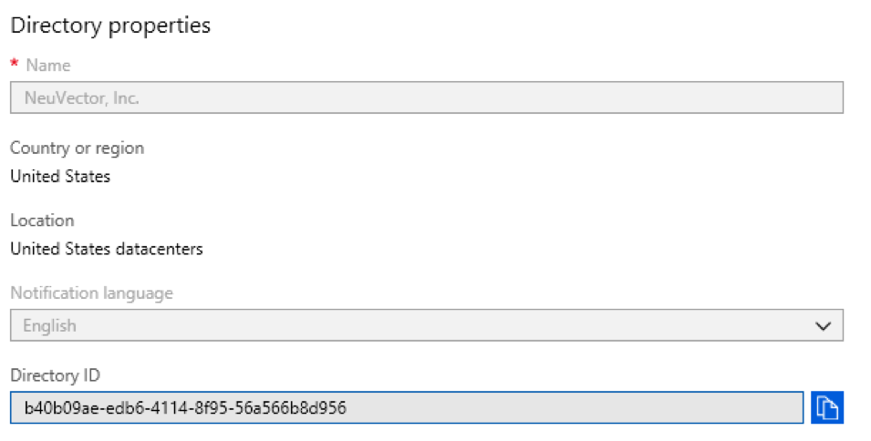
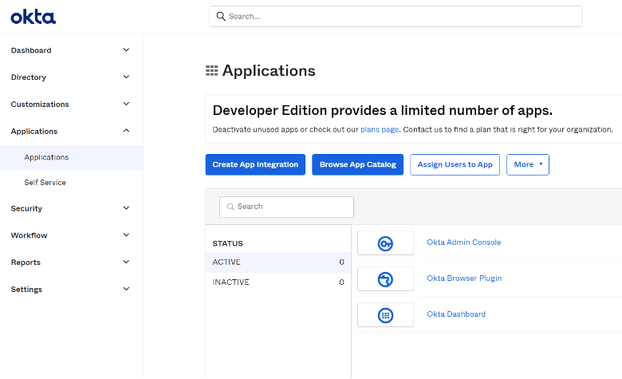
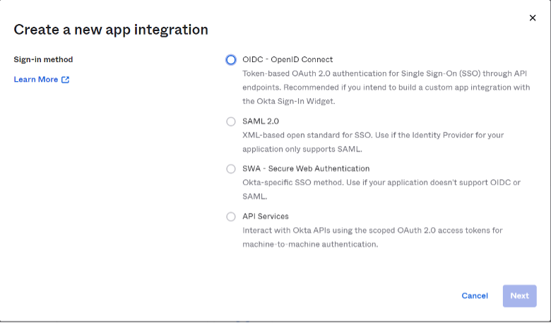
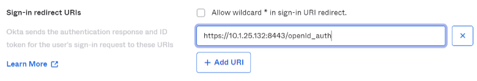
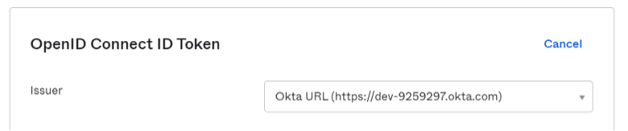
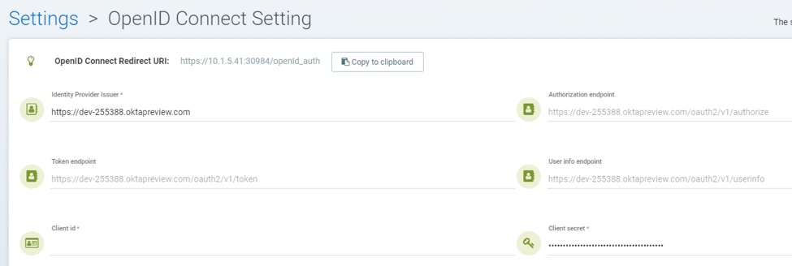

OpenID Connect Azure/Okta
AzureおよびOkta向けのOpenID Connect (OIDC)との統合
OpenID Connect認証を有効にするには、発行者、クライアントID、および*クライアントシークレット*の設定が必要です。発行者URLを使用して、SUSE® Securityは認証、トークン、およびユーザー情報エンドポイントを取得するためにディスカバリーAPIを呼び出します。
SUSE® Security OpenID Connect設定ページの上部にあるOpenID ConnectリダイレクトURIを見つけてください。このURIをOktaの*ログインリダイレクトURI*およびMicrosoft Azureの*応答URL*にコピーする必要があります。

Microsoft Azure Configuration
Azure Active Directory > アプリ登録 > アプリケーション名 > 設定ページで、アプリケーションID文字列を見つけてください。これはSUSE® SecurityのクライアントIDを設定するために使用されます。クライアントシークレットはAzureのキー設定にあります。

発行者URLは「 https://login.microsoftonline.com/{tenantID}/v2.0」形式を取ります。tenantIDを見つけるには、menu:Azure Active Directory[プロパティページ]に移動し、ディレクトリIDを見つけて、それをURLのtenantIDに置き換えます。

ユーザーがディレクトリのグループに割り当てられている場合、そのグループメンバーシップをクレームに追加できます。*Azure Active Directory → アプリ登録*でアプリケーションを見つけて、マニフェストを編集します。"groupMembershipClaims"の値を"Application Group"に変更します。 トークンに出力されるグループの最大数があります。 ユーザーが多数のグループ（> 200）に属しており、値"All"が使用されている場合、トークンにはグループが含まれず、認証が失敗します。 "All"の代わりに"Application Group"の値を使用すると、トークンに返される適用可能なグループの数が減少します。
デフォルトでは、SUSE® Securityはユーザーのグループメンバーシップを特定するためにクレーム内の"groups"を探します。他のクレーム名が使用されている場合は、SUSE® SecurityのOpenID Connect設定ページでクレーム名をカスタマイズできます。
Azureから返されるグループクレームは、名前ではなく「オブジェクトID」で識別されます。グループのオブジェクトIDは、menu:Azure Active Directory[グループ> グループ名ページ]にあります。この値を使用して、SUSE® Security →設定でグループベースのロールマッピングを構成する必要があります。

Okta設定
Oktaアカウントにログインします。
左側のメニューで「+アプリケーション → アプリケーション」をクリックします。中央のペインで、"`Create App Integration`"をクリックします：

新しいペインが表示され、"`Sign-in method`"を選択します：

"`OIDC — OpenID Connect`"オプションを選択します。
派生ペインが表示され、"`Application Type`"を選択します：

"`Native Application`"オプションを選択します。
中央のペインには、次の値を適切に入力する必要があるネイティブアプリ統合フォームが表示されます：
一般設定セクションについて：
アプリケーション統合名：この統合の名前。自由に任意の名前を選択してください。 認可タイプ（チェック）：
-
認可コード
-
リフレッシュトークン
-
リソースオーナーパスワード
-
インプリシット（ハイブリッド）
サインインリダイレクトURIセクションについて：
SUSE® Securityコンソールに移動し、“Settings” → "`OpenId Connect Settings`"にナビゲートします。 ページの上部で、"`OpenID Connect Redirect URI`"ラベルの隣にある"`Copy to Clipboard`"をクリックします。

これにより、リダイレクトURIがメモリにコピーされます。 対応するテキストボックスに貼り付けます：

割り当てセクションについて：
"`Allow everyone in your organization to access`"を選択して、この統合を組織内の全員が利用できるようにします。

次に、ページの下部にある保存ボタンをクリックします。
一般設定が保存されると、新しいアプリケーション統合の設定に移動し、クライアントIDが自動的に生成されます。
"`Client Credentials`"セクションで、編集をクリックし、"`Client Authentication`"セクションを"`Use PKCE (for public clients)`"から"`Use Client Authentication`"に変更し、保存をクリックします。これにより、今後のSUSE® Securityセットアップステップで必要となる新しいシークレットが自動的に生成されます。

"`Sign On`"タブに移動し、"`OpenID Connect ID Token`"セクションを編集します。 発行者を"`Dynamic (based on request domain)`"から固定の"`Okta URL`"に変更します。

Oktaコンソールは、クラシックモードと開発者モードの2つのモードで動作します。 クラシックモードでは、発行者URLはOktaアプリケーションのサインオンタブにあります。ユーザーのグループメンバーシップをクレームに返すには、SUSE® Security OpenID Connect設定で「groups」スコープを追加する必要があります。

開発者モードでは、Oktaはクレームをカスタマイズすることを許可します。これはAPIページで、認可サーバーを管理することによって行われます（左側のメニュー→セキュリティ→ APIに移動）。発行者URLは各認可サーバーの設定タブにあります。

クレームは、ユーザーに関する情報とOIDCサービスに関するメタ情報を含む名前/値ペアです。 "`OpenID Connect ID Token`"セクションでは、ユーザーのグループの新しいクレームを作成し、IDトークンにクレームを持たせることができます（IDトークンはJSON Webトークンであり、2つの当事者間で転送されるクレームを表すためのコンパクトでURLセーフな手段です。したがって、ユーザーに関する情報はトークンに直接エンコードされ、トークンが改ざんされていないことを証明するために確実に検証できます）。特定のスコープが設定されている場合は、ユーザーが認証された後にクレームが含まれるように、SUSE® Security OpenID Connect設定にスコープを追加してください。

デフォルトでは、SUSE® Securityはユーザーのグループメンバーシップを特定するためにクレーム内の"groups"を探します。他のクレーム名が使用されている場合は、SUSE® SecurityのOpenID Connect設定でクレーム名をカスタマイズできます。クレームを設定するには、次の画像に示すように"`OpenID Connect ID Token`"セクションを編集します。

アプリケーション統合ページで、"`Assignments`"タブに移動し、対応する割り当てがリストされていることを確認してください。

SUSE® Security OpenID Connect設定
適切な発行者URL、クライアントID、およびクライアントシークレットをページに設定してください。

ユーザーが認証された後、適切な役割はグループベースの役割マッピング設定によって導出されます。グループベースの役割マッピングを設定するには、
-
グループベースの役割マッピングが設定されていない場合や、一致するグループが見つからない場合、認証されたユーザーにはデフォルトの役割が割り当てられます。デフォルトの役割が「なし」に設定されている場合、グループベースの役割マッピングが失敗すると、ユーザーはログインできません。
-
管理者およびリーダー役割マップにそれぞれグループのリストを指定してください。ユーザーが認証された後、IDトークンのクレームによってユーザーのグループメンバーシップが返されます。一致するグループが見つかった場合、対応する役割がユーザーに割り当てられます。
グループはSUSE® Securityで管理者役割にマッピングできます。個々のユーザーは、ローカルクラスタ管理者としてログインし、アイデンティティプロバイダー「OpenID」を持つユーザーを選択し、設定→のユーザー/役割でその役割を編集することによって、連携管理者役割に「昇格」できます。
グループを役割およびネームスペースにマッピングする
グループをプリセットおよびカスタム役割、ならびにのネームスペースにマッピングする方法については、ユーザーと役割セクションをご覧ください。SUSE® Security